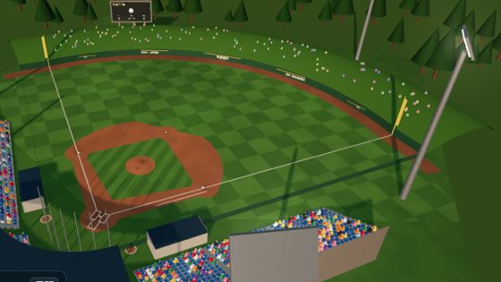

🌊 海洋系列：選一款遊戲
🛶
划舟浮標賽
在身體左右兩邊往下划，讓小艇穿過紅綠浮標門。
開始玩 → 🏄衝浪
身體傾斜轉彎、蹲低加速，閃開漂流木、撿起海上垃圾。
開始玩 → ⛵帆船
看風向、傾斜轉舵、揮手換舷，學會逆風要走「之字形」。
開始玩 → 🎣釣魚（台灣東北角）
揮臂甩竿、看水面下的魚影、手畫圈捲線、壓低身體和魚拉扯。釣到的魚進冰箱看圖鑑卡。
開始玩 →每款遊戲打開時會先出現「怎麼玩」動畫說明；做不到的動作都可以在選單裡關掉，遊戲一樣能玩完。
⚾ 陸地系列：棒球場 新
陸地系列的第一個場地是少棒尺寸的棒球場（壘間 18.29 公尺、投捕 14.02 公尺），之後會加上道場等其他場地，並發展成「體感野球」。
⚾
打擊練習
投手投球過來，雙手往前揮棒，打出安打！太早、太晚會變界外。空手揮，不拿球棒。
開始玩 → 🏟️棒球場展示

不用鏡頭，直接看整座球場：切換白天、黃昏、夜間，從本壘後方、投手丘、空拍等角度看，畫面上也列出場地尺寸。
打開展示 → 📘體感野球企劃
完整「體感野球」的建議玩法、分階段開發順序、場地規格出處、畫質取捨與我的建議。
閱讀企劃 →⚾ 陸地系列怎麼玩（給學生看）
⚠️ 打棒球體感遊戲前，一定要做到：
- 🚫 空手揮棒：不要拿真的球棒、掃把、雨傘、水壺或任何東西揮。
- ↔️ 玩家周圍至少 1.5 公尺淨空，左右兩邊不能站人（揮棒會甩到兩側）；安全員站在玩家正後方 2 公尺外。
- 📱 平板放穩、離玩家 2 公尺以上，揮手打不到平板。
- 🪑 可以坐在椅子上玩（只轉上半身）；選沒有扶手的椅子。
- ⏭️ 做不到的動作可以改成「單手揮」「身體傾斜」或「自動揮棒」，一樣能玩完。
- 💪 不用很用力，中等速度就會判定；每人連續玩不超過 5 分鐘。
🧍
輸入層測試頁
用鍵盤或滑鼠模擬動作，即時顯示「目前偵測到什麼」和遊戲收到的事件。有鏡頭的裝置也能直接測真人動作。
打開測試頁 → 📄企劃文件
5 款運動型海洋遊戲的動作、規則、難度、天氣影響，場地與安全規範、坐著玩的方式，以及開發優先順序與建議。
閱讀企劃 → 📋白話說明與測試結果
這一輪做了什麼、我替您做的決定、自我測試結果，以及需要您用平板實測的項目。
閱讀說明 →🔍 這台裝置能不能玩？（自動檢查）
這裡只檢查「瀏覽器有沒有這些功能」，順不順還是要實際打開遊戲看右下角的「格/秒」（25 以上就算順）。
📋 給老師的白話說明
做了什麼、怎麼測的、哪些需要用平板實測：
🧰 其他
- 原始海洋展示（open-water）：可以調天氣、看暴風雨
- MIT 授權・音效來源與授權（CREDITS）
- 棒球場展示：白天／黃昏／夜間、各種視角